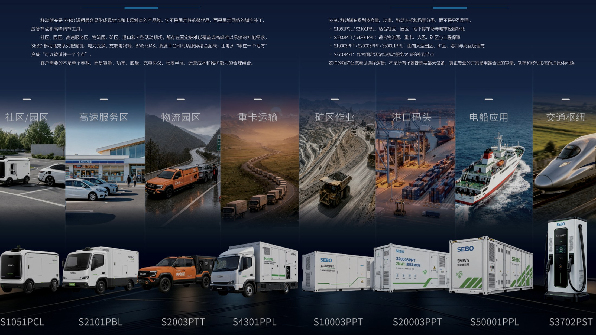
REFERENCE APPLICATIONS
从场景约束，进入参考架构。
17 项典型应用先定义客户场景、约束条件、参考架构和适用边界，再进入工程评估。
典型应用不是客户案例。
客户案例只在获得授权、具备基线、实测结果和 M&V 后发布。
 01
01城市 / 应急
V2X 应急临时供电
在电网、车辆与关键负荷之间建立可移动、可调度的临时供电窗口。
查看参考架构 →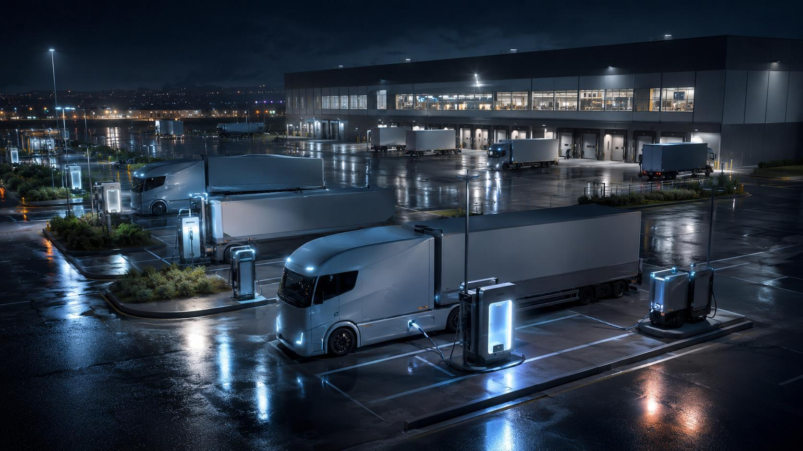
02港航
电动船舶与水上物流港口
岸电、移动储充、站端储能与港口作业窗口协同。
查看参考架构 →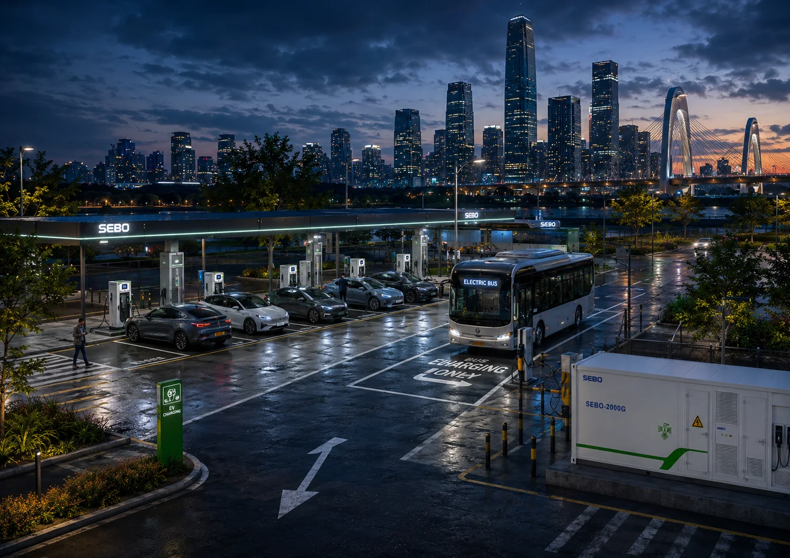
03交通
高速公路服务区综合能源
用固定节点承接基础负荷，移动储充应对潮汐峰值与应急。
查看参考架构 →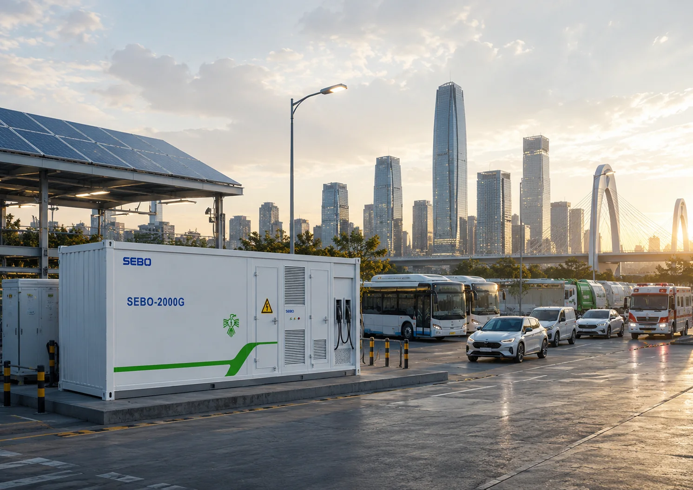
04公共交通
公交枢纽与交通中转站
围绕班次、回场窗口、并发功率和场站容量组织补能。
查看参考架构 →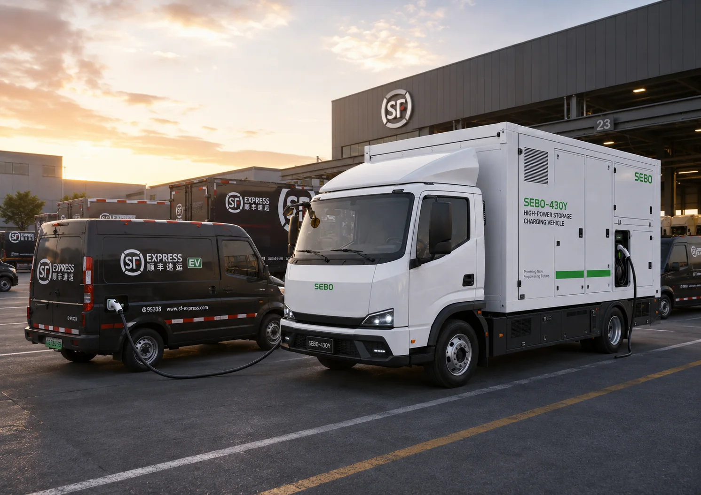
05物流园
集团物流园区综合能源
车队、站端、峰谷电力与服务工单形成统一经营账本。
查看参考架构 →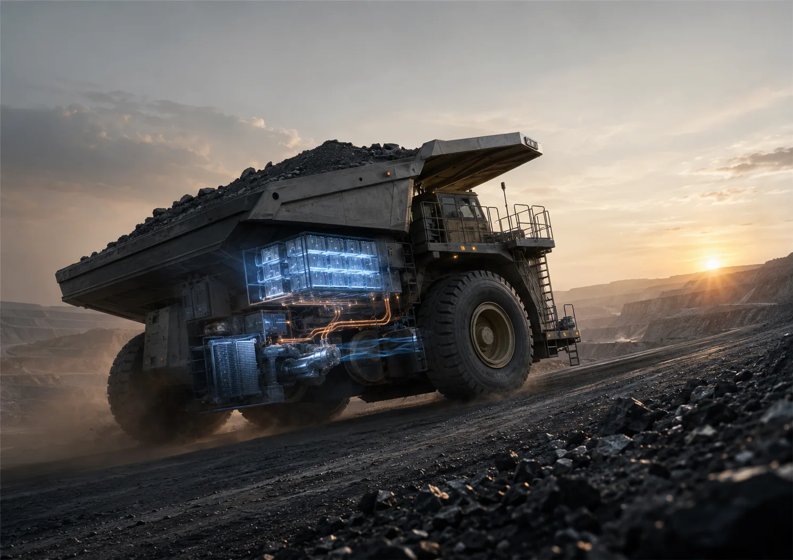
06干线物流
干线重卡综合解决方案
以线路、班次、载重、补能网络和 TCO 定义运营方案。
查看参考架构 →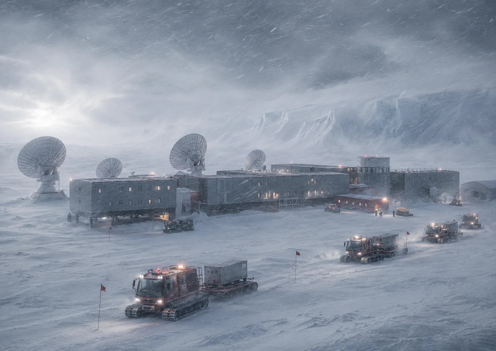
07极端 / 离网
08偏远工地及边防哨所离网供能
在弱网、宽温、通信受限和长维护窗口下维持任务连续性。
查看参考架构 →农业
乡村微电网与农业机械电动化
分布式能源、农业负荷与移动补能按季节和作业窗口配置。
查看参考架构 →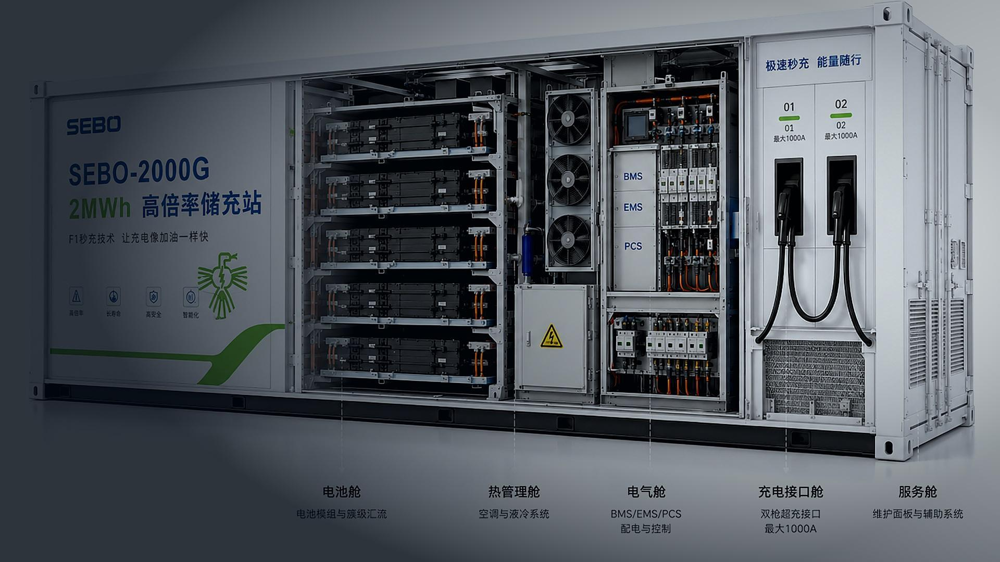
09医疗 / 应急
10医疗设施绿色备用与移动应急供电
以关键负荷、切换时间、持续时长和维护制度定义备用边界。
查看参考架构 →交通枢纽
机场与高铁站综合能源
多类型负荷、冗余路径、地勤车辆与应急保障协同。
查看参考架构 →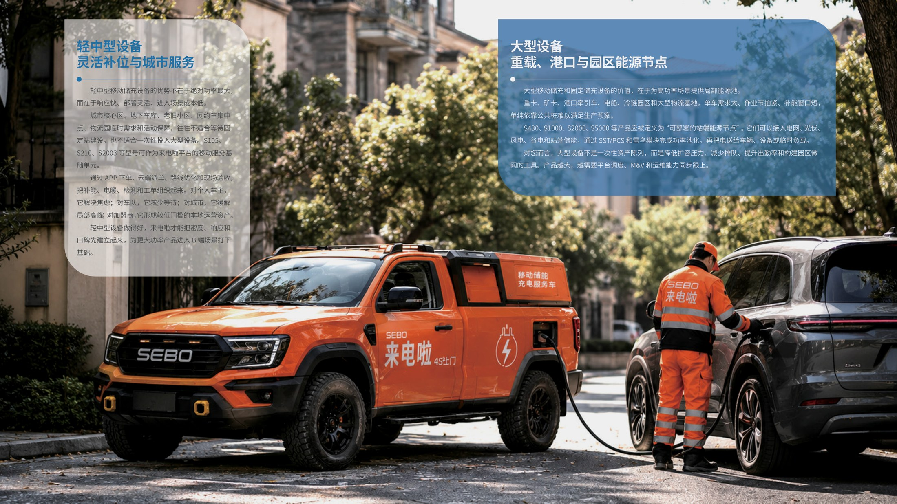
11文旅
景区综合能源
移动补能、低噪运行与节假日峰值响应。
查看参考架构 →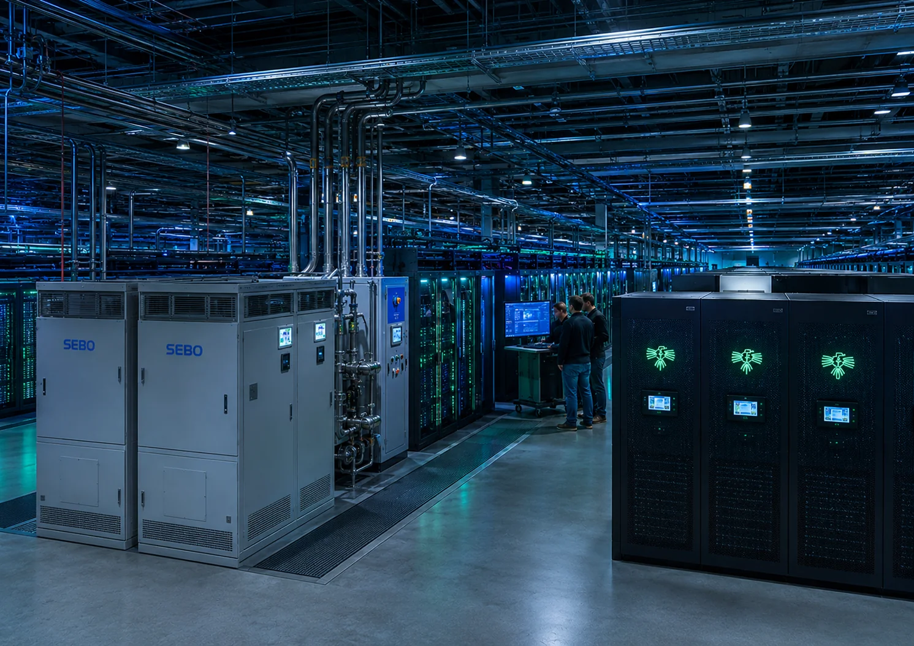
12算力
数据中心绿色备用电源
近端缓冲、UPS/BESS 与可验证能源路径共同保障有效 GPU 小时。
查看参考架构 → 13
13矿山 / 港口
14矿山与港口重载运输综合能源
以出勤率、吨公里、补能确定性和服务闭环定义系统。
查看参考架构 →极端 / 边防
高原边防与极端节点微电网
温度、海拔、重量、通信与维护窗口共同决定任务能源。
查看参考架构 →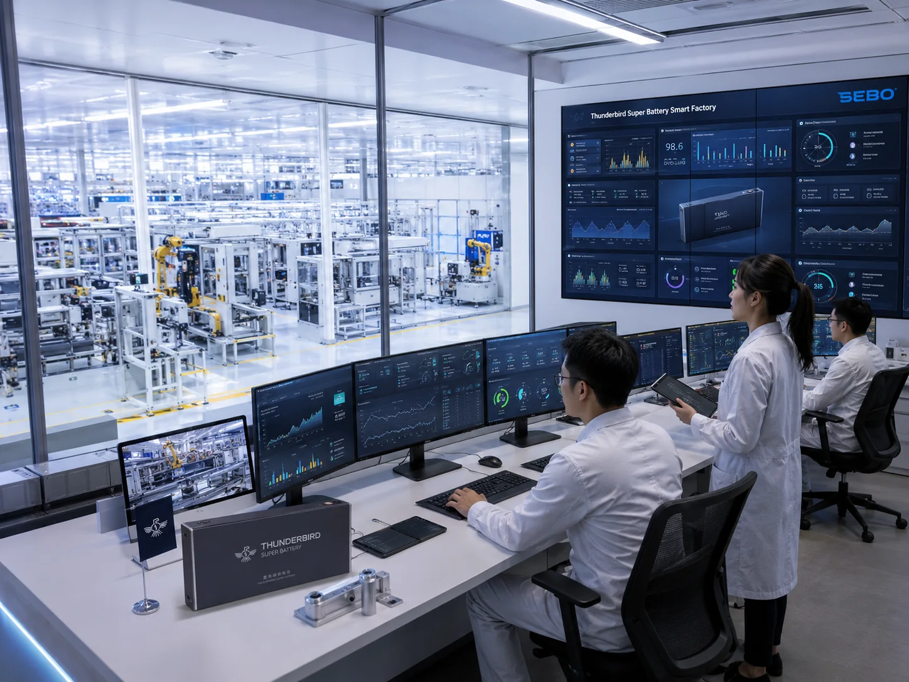
15园区
16智慧工业园区与校园微电网
源网荷储、功率路由、调度与服务形成可扩展底座。
查看参考架构 →矿山
矿卡重卡油改电综合方案
车辆适配、道路坡度、工况循环、补能窗口与 TCO 联合验证。
查看参考架构 →17重载车队
100 台 70T 新能源重卡微电网能源站
百车调度、站端功率、储充协同与服务 SLA 一体设计。
查看参考架构 →